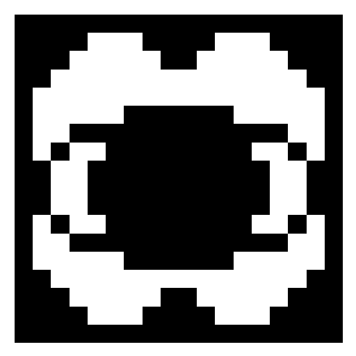
Monochromatic Omen
This effect will make an entity the main target of the Entities.

This effect will make an entity the main target of the Entities.
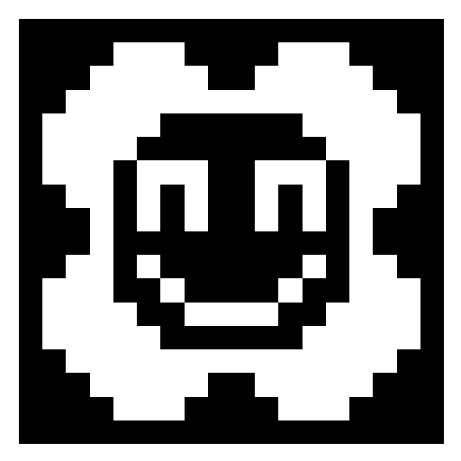
This effect will make the holder suffer an hallucination, it can be an image, sound or else.
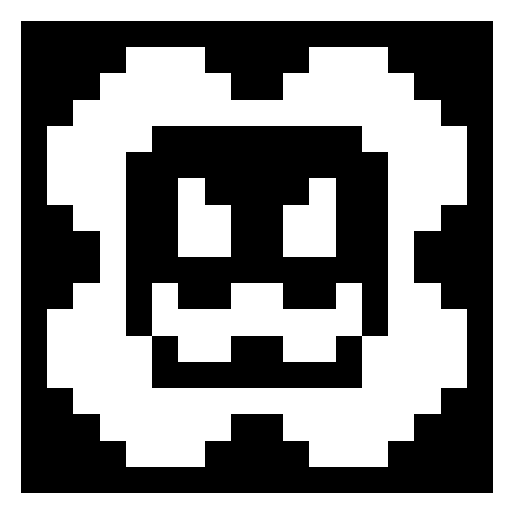
This effect will make the ominous entities more agressive, but if the player survives will receive more keys.
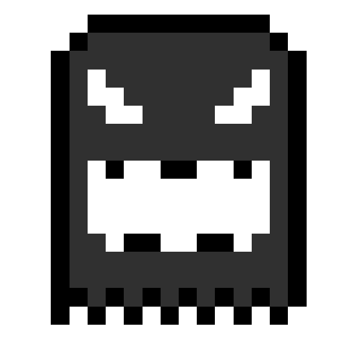
After you got spooked, this effect will make you see everything black and white (SHADER)
(DON'T WORK ON SERVER)
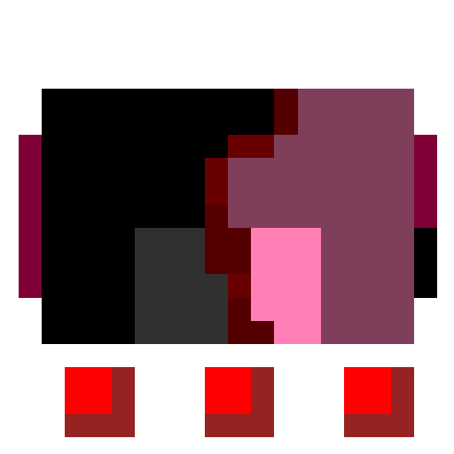
This effect always leasts 5 seconds, this will make the player see text on his screen and sometimes with static, but if a Chaser is nearby and the player is the main target; this will teleport him arround the entity.
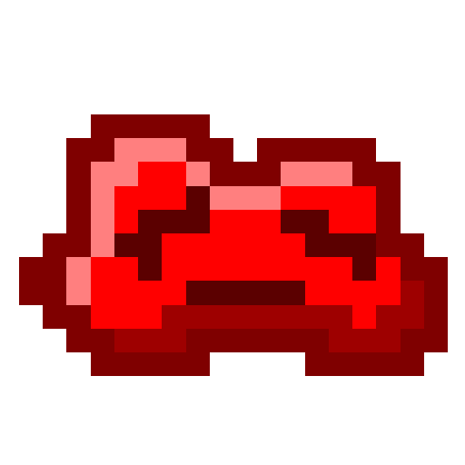
Will surrond the target with a thick red fog that woulnd't let him see more than 8 blocks forward.
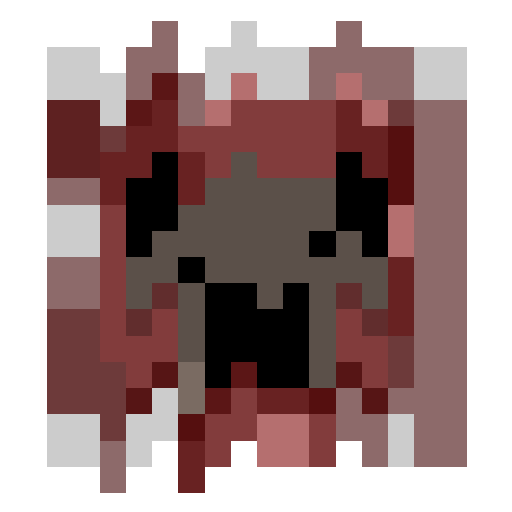
It will make the infected start shaking of fear uncontrollably.
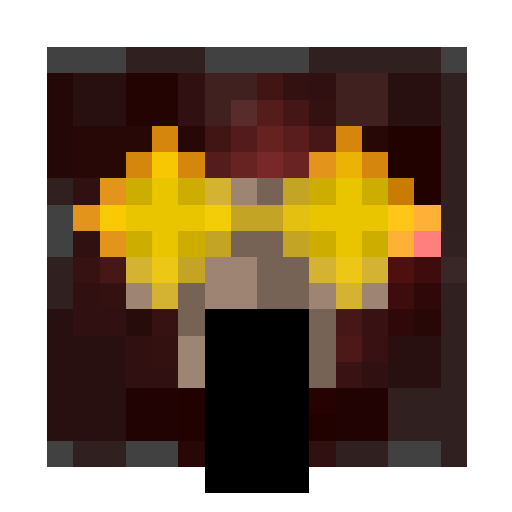
It will blind the player and the entities that surround him, making the entities confused.
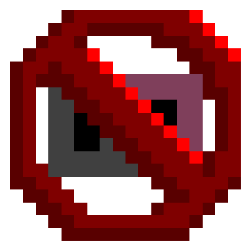
It prevents Porky to spawn to that player.
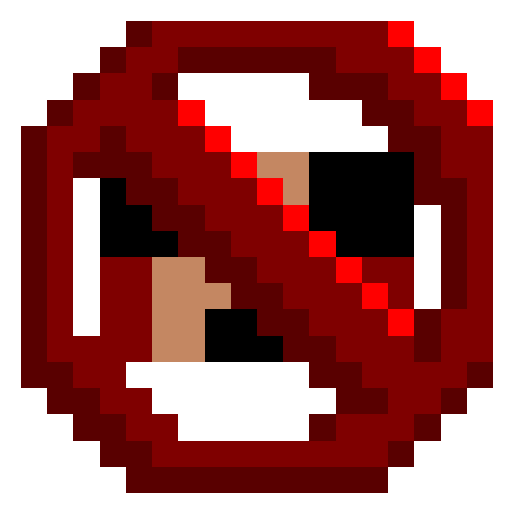
It prevents Jones type entities to spawn to that player.
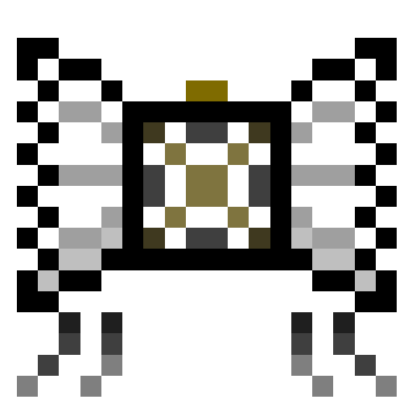
It will display a clock in the survival inventory on the bottom left part, this clock will tell the player the time left to another entity appear.
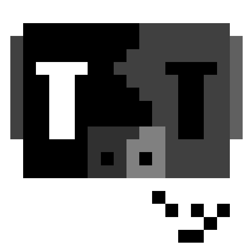
(ONLY FOR WEEPER)
This effect activates when the player is watching a Weeper, it stops it from moving and makes him fall if he is floating.
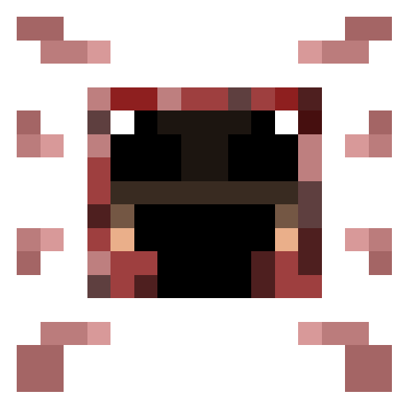
(Pants)
This effect will give speed to the player who wears it whenever an Ominous Entity is close.